Lyngby
Grobkörniger, stark roter Granit
Höhe: 147 cm
Größte Breite: 67 cm
Dicke: zw.12 und 18 cm
Runenhöhe: 10,3 / 10,8 / 13 cm
Runeninschrift :
...(und) Anundr (?) in Erinnerung an seine Geliebte / seine Frau (?)

29 - Lyngby - Letztes Update 20.08.2025
Listennummer : DR 140 / DK NJy 51
| Navidaten: 56.84378 10.04258 oder: Lyngbyvej 7, 9520 Skørping |
Transliteration: ...(n)untr : a : aisku : sina :
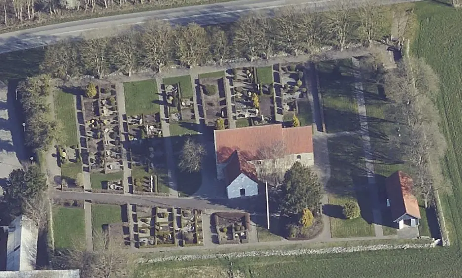
Das ist ein Luftfoto vom 17.04.2023 von Skråfoto das die Kirche von Lyngby zeigt. Skråfoto ist eine Webanwendung, die von Klimadatastyrelsen weltweit kostenlos bereitgestellt wird - Freie Nutzung unter Beachtung der Lizenz: CC BY 4.0. Die Aufnahmen werden seit 2017 alle zwei Jahre erneuert und neben einer Senkrechtaufnahme wird ein Schrägbild aus jeder Himmelsrichtung angeboten, das man über eine Adresssuche aufrufen kann.
Dieser Runenstein wird erstmals von Søren Abildgaard (*18.02.1718 - 02.07.1791, Zeichner, Kupferstecher und Geologe)
 Bildquelle:
Jellingprojektet - Lizenz:
Public Domain -
http://www5.kb.dk/images/billed/2010/okt/billeder/object444188/da/
Bildquelle:
Jellingprojektet - Lizenz:
Public Domain -
http://www5.kb.dk/images/billed/2010/okt/billeder/object444188/da/
im Jahr 1769 erwähnt als er in der Kirchhofmauer der Kirche von Lyngby, beim südlichen Eingang zum Kirchhof, stand (siehe unten). Irgendwann zwischen 1841 und 1870 wurde er aus der Kirchhofeinfriedung herausgenommen und auf seinen jetzigen Platz im Waffenhaus der Kirche umgesetzt.
Vom Stein fehlt ein großes Stück und er wurde wohl auch an allen Seiten behauen. Vermutlich hatte die Inschrift aus einem bogenförmigen Runenband bestanden. Man erkennt in dem Textband noch 14 Runen und Spuren einer 15. Rune im Bereich der Bruchfläche. Der Stein wird auf die Zeit zw. 970 und 1020 datiert. Die Inschrift wird von oben nach unten gelesen.
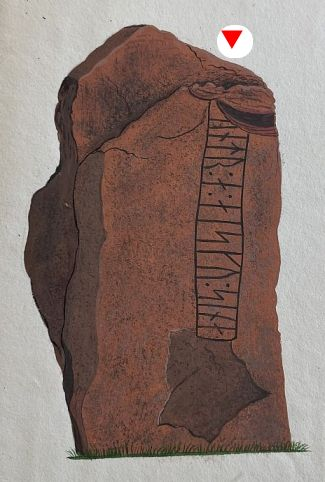
Bildquelle: Zeichnung von Rasmus Henrik Kruse von 1841 - siehe unten - Lizenz: Public DomainAm Samstag, 17.08.1991, war ich erstmals in Lyngby, die Kirche war aber leider geschlossen. Danach kam ich nochmals am Sonntag, 02.07.2000, vor Ort. In meinen alten Unterlagen habe ich vermerkt, dass ich den "Graver" (Schlüsselträger, der sich um den Kirch-/Friedhof kümmert, auch Totengräber oder Küster betitelt) zu Hause abgeholt habe. Die Anschrift/Telefonnummer der "Graver" steht oftmals in einem Info-/Schaukasten am Eingang zum Kirchhof. Im Rahmen meiner 2022er Jütland Wikingertour war ich nun am Donnerstag, 02.06.2022, bei der Kirche von Lyngby, die wieder verschlossen war. Diesmal habe ich ihn - ob es der gleiche Herr war, weiß ich jedoch nicht - über die ausgehängte Telefonnummer angerufen: "Hej, jeg kommer fra Sydtyskland. Jeg vil gerne se runesten i kirke. Desvære kirken er lukket. Er de muligt du kommer med nøgler til kirken?" - Übersetzung: "Hallo, ich komme aus Süddeutschland. Ich möchte gerne den Runenstein in der Kirche sehen. Leider ist die Kirche geschlossen. Ist es Ihnen möglich, den Schlüssel zur Kirche zu bringen? Seine kurze Antwort lautete nur: "Ti minutter". Er war zufällig gerade in der Nähe und war noch unter den angesagten 10 Minuten mit dem Schlüssel vor Ort - Mange tak!
Das Foto im linken Frame ist demnach auch schon wieder 22 Jahre alt. Nun konnte ich neuerliche digitale Fotos vom Runenstein anfertigen.
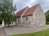 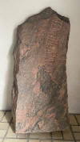 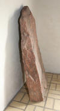 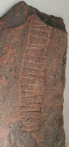


Als der Stein von Søren Abildgaard (*18.02.1718 - 02.07.1791, Zeichner, Kupferstecher und Geologe) im Jahre 1769 abgezeichnet wurde, stand er in der Kirchhofmauer der Kirche von Lyngby, beim südlichen Eingang zum Kirchhof.
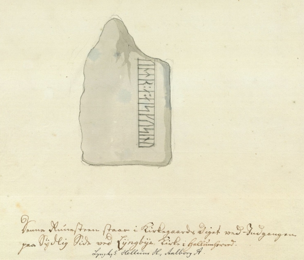
Abildgaards Text: "Denne Runesteen staar i Kirkegaards Diget ved Indgangen paa Sydlig Side ved Lyngbye Kirken i Hellum Herred".
Originalgröße: 22 x 25 cm - Quelle: Digitale Sammlung des Nationalmuseums in Kopenhagen - Lizenz: CC-BY-SA
Außerdem hat Abildgaard in seinem Tagebuch VI, 1769, Blatt 39, diese Notiz zu dem Runenstein aufgenommen.
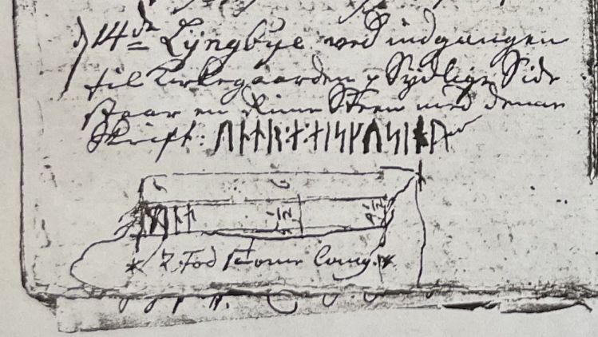

Seine Tagebücher befinden sich heute im Antiqvarisk-Topografisk Arkiv in Kopenhagen. Dies ist die Fotografie einer Kopie, die auch dort vorgehalten werden und ich dort am 28.09.2022 fertigen durfte.
In diesem Jahr findet sich auch ein Eintrag in Erik Pontoppidan (der Jüngere, *03.09.1698 - 20.12.1764, dänischer Theologe, Prediger, Historiker und Autor)
 Bildquelle:
Wikipedia - Lizenz:
Public Domain
Bildquelle:
Wikipedia - Lizenz:
Public Domain
Werk "Den Danske Atlas", Tomus 5, 1. Bind, S. 46, Note k: = S. 28 in der pdf-Datei: "Ved ingangen til Kirkegaarden [i Lyngby] staaer opreist en Steen 1 ½ Alen lang med forsledte Rune-Bogstaver paa, hvilken ikke findis i Wormii Monumentis Runicis".
Die dänischen Pfarrer waren 1807 aufgerufen die in ihrer Gemeinde befindlichen Denkmäler jedweder Art nach Kopenhagen zu melden. Der damalige örtliche Pfarrer Nicolai Holst (*04.09.1756 - 13.07.1841 - link-LIVES) schickte daraufhin seinem Bericht vom 06.12.1808. Darin erstellte er diese Zeichnung:
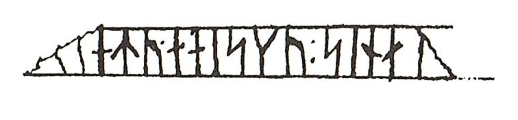
Quelle: Danske Præsters Indberetninger til Oldsagskommissionen af 1807, Nord- og Østjylland, Wormianum, 1996, Christian Adamsen og Vivi Jensen, S. 158
Auf Anfrage bekam ich heute - 11.02.2025 - vom Antikvarisk -Topografisk Arkiv, das dem Nationalmuseum in Kopenhagen angeschlossen ist, einen Scan des Originalschreibens von Pfarrer Nicolai Holst, das dort verwahrt wird, zugemailt - Tusind tak Danial! Holst war damals der Gemeindepfarrer für die Kirche Skibsted und für die Kirche Lyngby - die ca. 3 km auseinander liegen. In dem Schreiben führt er weitere Denkmäler in seiner Region auf, bevor er am Ende im letzten Absatz unter "e)" schreibt:
"I Lyngbye Kirkegaards Muur findes indsat en aflang opreist Steen hvoraf begge Ender med de derpaa staaende Runer er afbrudt. - Paa bemælte Steen findes undertegnede næsten udslidte Runer."
Übersetzung: "In der Einfriedungsmauer des Friedhofs von Lyngby befindet sich ein länglicher, aufrecht stehender Stein, dessen beide Enden mit den darauf eingravierten Runen abgebrochen sind. Auf dem Stein erkennt der Unterzeichner fast abgenutzte Runen."
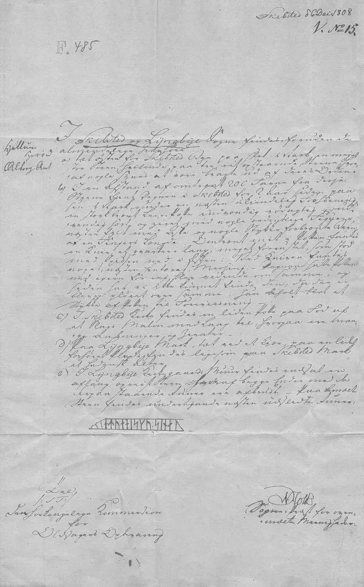
Er unterschreibt rechts unten mit:
N: Holst
Sogne-Præst for oven-
mælte Meenigheder.
Übersetzung: Gemeindepfarrer für die oben genannten Gemeinden.
Eine Zeichnung wurde auch durch Rasmus Henrik Kruse (*07.08.1796 - 30.05.1877, Landschaftsmaler - link-LIVES - Heirat 21.12.1851)
 Bildquelle:
Det Kgl. Biblioteks billedsamling - Lizenz:
Public Domain
Bildquelle:
Det Kgl. Biblioteks billedsamling - Lizenz:
Public Domain
im Jahr 1841 gefertigt. Er hat sie mit seinen handschriftlichen Ausführungen in seine Abhandlung "Nørre Jyllands Mærkværdigheder i det 19. Aarh. Hs. Bd 1-2 (med) Tillæg 1-2" aufgenommen - Band II, 1852, S. 37, Zeichnung Nr. 10 - Ergänzung in Beilage 1 von 1856, Seite 6 hinten/Seite 7. Dieses Werk wird heute im Nationalmuseum in Kopenhagen, Antikvarisk-Topografisk Arkiv, aufbewahrt. Dort durfte ich am Dienstag, 27.09.2022, zu Gast sein und die vier Bände in Händen halten und fotografieren.
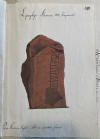 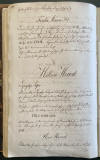 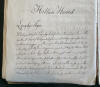 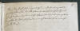


In dem Runenwerk von Prof. P. G. Thorsen (*07.08.1811 - 06.05.1883, Bibliothekar, Runenforscher und Historiker - link-LIVES - Artikel: Levnedsbeskrivelser af de ved Københavns Universitets Firehundredaarsfest promoverede Doktorer, Illustreret Tidende 1882, Nr. 1235 - vom 27.05.1833 / Grabstein in Varde / Eheschließung in Varde am 19. August 1848)
 Fotografie
zw. 1863-1900 von
Fotograf Budtz Müller (*26.12.1837 -
30.12.1884) -
Det Kgl. Biblioteks billedsamling - Lizenz:
Public Domain
Fotografie
zw. 1863-1900 von
Fotograf Budtz Müller (*26.12.1837 -
30.12.1884) -
Det Kgl. Biblioteks billedsamling - Lizenz:
Public Domain
das 1879 erschien "De danske Runemindesmærker, beskrevne og forklarede af P.G. Thorsen Anden Afdeling - Jyllands Runemindesmærker tilligemed Meddelelser om alle Øernes, Afbildninger og Text, I. Afbildninger, Nr. 74" wird die Inschrift nur als Text, nicht als Zeichnung, wiedergegeben:
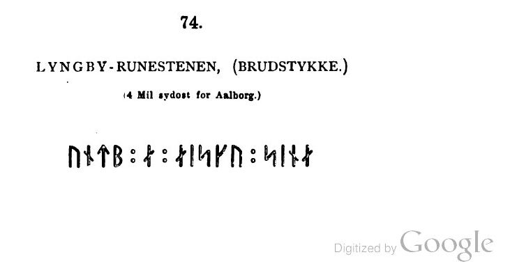
In seinem Textband "De danske Runemindesmærker, beskrevne og forklarede af P.G. Thorsen Anden Afdeling - Jyllands Runemindesmærker tilligemed Meddelelser om alle Øernes, Afbildninger og Text, II. Text" aus dem Jahr 1880 macht er auf der S. 180 Ausführungen zu dem Runenstein. Dort führt er auch an, dass er den Stein 1838 in der Kirchhofeinfriedung antraf.
P. G. Thorsens Nachlass (Bezeichnet als: P. G. Thorsens optegnelser, tegninger m.m. vedrørende runer og runemindesmærker - überführt aus der Kopenhagener Universitätsbibliothek 1929 - Gemäß Ministerialschreiben vom 04.03.1929; früher benannt als Additamenta 612 kvart) - findet sich in der Königlichen Bibliothek in Kopenhagen unter NKS 3296 kvart (in mehreren einzelnen Pappschachteln). In der Pappschachtel Nr. 17 ist zu Lyngby etwas dabei. Zum einen eine Zeichnung des Runensteins, die wohl von Rasmus Henrik Kruse (*07.08.1796 - 30.05.1877, Landschaftsmaler) gefertigt oder dessen Zeichnung von 1841 nachempfunden wurde - siehe oben. Außerdem wird darin auch eine tolle Zeichnung von Prof. Julius Magnus Petersen (*04.09.1827 - 31.01.1917, Archäologischer Zeichner und Restaurator - link-LIVES - Bestattungsprotokoll)
 Bildquelle: Fotografie
von 1903 von Fotograf Marius Christensen
(*24.06.1874 -
25.06.1907) -
Det Kgl. Biblioteks billedsamling - Lizenz:
Public Domain
Bildquelle: Fotografie
von 1903 von Fotograf Marius Christensen
(*24.06.1874 -
25.06.1907) -
Det Kgl. Biblioteks billedsamling - Lizenz:
Public Domain
verwahrt, die er auf den 05.07.1870 datiert hat.


Magnus Petersen hat auf der Zeichnung auch eine Anmerkung hinsichtlich der Dicke des Runensteins hinterlassen, die wohl ursprünglich das Doppelte betragen hat. Bei der Herausnahme aus der Kirchhofeinfriedung brach von der Rückseite des Runensteins offenbar ein großes Teil ab.
In dem Nachlass findet sich aber in der Pappschachtel Nr. 6 auch noch diese handschriftliche Notiz von P. G. Thorsen aus dem Jahr 1838.

Darauf gibt er augenscheinlich die Zeichen der Runeninschrift von verschiedenen Quellen wieder. In der obersten Linie schreibt er - jeweils übersetzt - etwas von: "Inspektor Rosenbeik an L... 21. Juni 1821". In der zweiten Linie notiert er lediglich: "Eine andere ... Zeichnung" und in der untersten Zeile heißt es dann wohl: "Königlicher Zeichner Abildgaard 14. Juli 1769".
Prof. Ludv. F. A. Wimmer (*07.02.1839 - 29.04.1920, Philologe und Runenforscher - link-LIVES - Politiets registerblade - Bestattungsprotokoll)
 Bildquelle:
Fotografie zw. 1877-1900 von Fotograf Hansen & Weller
-
Det Kgl. Biblioteks billedsamling - Lizenz:
Public Domain
Bildquelle:
Fotografie zw. 1877-1900 von Fotograf Hansen & Weller
-
Det Kgl. Biblioteks billedsamling - Lizenz:
Public Domain
der die Grundlage zu der modernen Runenforschung gelegt hatte, besichtigte diesen Runenstein am 10. August 1878 und am 20. Juli 1892.
In seinem Runenwerk "De danske runemindesmærker undersøgte og tolkede af Ludv. F. A. Wimmer, Andet Bind, Runestenene i Jylland og på øerne. 1899-1901 - Nr. 13, S. 113, findet sich diese Zeichnung des Runensteins von Magnus Petersen (*04.09.1827 - 01.02.1917, Archäologischer Zeichner und Restaurator), die von Ludv. F. A. Wimmer nach seinen Studien am Objekt noch überarbeitet wurde.
Eigener Scan aus der in meinem Besitz befindlichen Ausgabe, Nr. 13, S. 113 - Lizenz: CC-BY-SA
Ludv. F. A. Wimmer hat seine jahrelangen Aufzeichnungen der
"Kgl.
Bibliotek" in
Kopenhagen überlassen. Ein
Verzeichnis darüber wurde 1915 in Buchform
herausgegeben - "
In seinen Unterlagen in der Königlichen Bibliothek befinden sich unter "III - Originaltegninger af de danske Runemindesmærker, udførte paa Undersøgelsesrejserne af Magn. Petersen og kontrollerede paa Stedet af Ludv. Wimmer, samt Prøvetryk af de paa Grundlag af de nævnte Tegninger, Aftryk o. s. v. til De danske Runemindesmærker" udførte Afbildninger med Wimmers Rettelser" zu dem Runenstein von Lyngby unter der Nr. 30 eine Zeichnung von Magnus Petersen, die er auf den 10.08.1878 datiert hat. Diese durfte ich am 27.09.2022 fotografieren.


Erik Moltke (*04.04.1901 - 19.10.1984, Runologe, Historiker - link-LIVES)
 Bildquelle: Scan von Buchumschlag "Runerne i Danmark og ders
oprindelse" - Erik Moltke - 1976 - Lizenz:
CC-BY-SA
Bildquelle: Scan von Buchumschlag "Runerne i Danmark og ders
oprindelse" - Erik Moltke - 1976 - Lizenz:
CC-BY-SA
hat diese sw Aufnahmen am 15.04.1931 angefertigt.
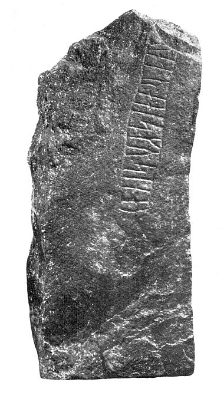
Eigener Scan aus der in meinem Besitz befindlichen Ausgabe "Danmarks Runeindskrifter , Jacobsen/Moltke, Atlas, 1941, Nr. 346, S. 131". Lizenz: CC-BY-SA
Im Vorfeld zu dem 2016 erschienenen Buch von Lisbeth M. Imer (*1973, Runologin am Nationalmuseum Kopenhagen) "Danmarks Runesten - en fortælling" reiste sie mit dem Fotografen Roberto Fortuna zur Bestandsaufnahme durch die Lande. Dieser hat die Runensteine mit Schräglicht aufgenommen und darüber wirklich herausragende Fotos erzielt. Diese Fotografie stammt vom 22.10.2012.
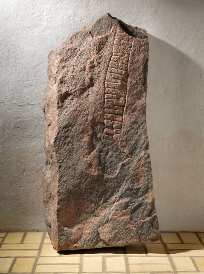
Quelle: Digitale Sammlung des Nationalmuseums in Kopenhagen - Lizenz: CC-BY-SA
Die (unsichere) Lesung/Deutung links stammt von Michael Lerche Nielsen, Professor an der Universität Kopenhagen, Institut für Nordische Studien und Linguistik, der diese in "Danske Studier", 2012, S. 5-23, in der Abhandlung "»Og efter sin elskede«?!" veröffentlicht hat. Er stellt darin die Überlegung an, dass der fehlende Teil der Inschrift vielleicht "N.N. errichtete diesen Stein zum Gedenken für seine Tochter/Schwester/Mutter N.N." war und bezeichnet dies aber selbst als reine Spekulation.
Den Eintrag zu diesem Runenstein aus der dänischen Runen Datenbank im Internet kann man hier abrufen.
Die Informationen in "Fund og Fortidsminder" zu dem Runenstein finden sich hier. Darin ist inzwischen dieser Zustandsbericht des Steinrestaurators Leif Vognsen aus dem Jahr 2018 eingebettet.
Über diesen Link finden sich zu dem Runenstein Informationen des Forschungsprojektes "Runes" der Akademie der Wissenschaften zu Göttingen.